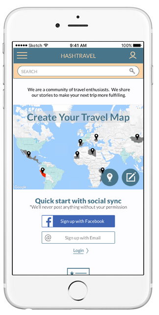

CHRIS EICHLERUX DESIGNER AND RESEARCHER
HASHTRAVEL
Web App Redesign • Timeframe: 2 weeks • Role: Co-Designer
Hashtravel aims to solve the broader questions of travel: to what country or city should I go, and why? It's not about flights and hotel rooms; it's about a community of people who love travel telling stories and giving advice to each other.

Results
The Hashtravel App is a young product with huge potential, so helping to create new designs for them was exciting. The task was to create new landing pages, user onboarding that communicated the purpose of Hashtravel, and new ways to use maps, which were to be the center of the experience.



Understanding the Business
How special was Hashtravel? That was the first question that we needed to answer. In a travel tech field that is crowded and fast-growing, what was it offering and how could we help differentiate it through our work?
There are travel companies that started out answering the big questions about where someone might want to go. Most of those have drifted more towards e-ticketing for airline and booking hotel rooms. A review of major online travel sites confirmed what the Hashtravel founder had suspected: that a crowdsourced community dedicated to broad discussion about travel and places would be unique on the web.
There are hundreds of ways that different sites present maps online, and they can be really fun. With new mapping technologies and libraries lots of graphic and exciting map experiences have become possible. How could Hashtravel take advantage of this and create map-centered pages that would keep users exploring?
On Hashtravel's side what is wanted is a vibrant community of users that produces interesting content. But what do the users really want or need?

Users
Hashtravel App already existed, so in this project one we were able to start with some user testing. These early tests of the existing product told us that the purpose and specialness of Hashtravel was not being communicated clearly enough.